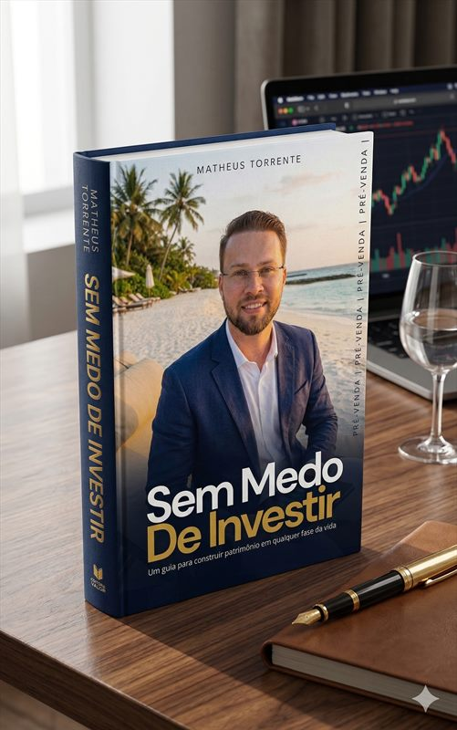

Você trabalha duro para guardar dinheiro, mas tem medo de investir no lugar errado?
O medo de investir só existe quando você não sabe o que está fazendo. Em 4 meses de acompanhamento próximo, vou pegar na sua mão para você sair da poupança, fugir das armadilhas de gerentes de banco e montar uma carteira 100% segura.
- Zero Economês: Explicações simples e diretas para quem nunca investiu ou tem receio de perder dinheiro
- Independência de Bancos: Nunca mais caia em títulos de capitalização, fundos caros ou COEs
- Passo a Passo Acompanhado: Da Reserva de Emergência à sua primeira carteira rentável e protegida

Deixar o dinheiro parado também é perder dinheiro todos os dias
Enquanto o medo te paralisa, a inflação corrói silenciosamente o fruto do seu trabalho.
Medo de apertar o botão errado e perder o que juntou
Você vê dezenas de siglas (CDB, Tesouro, LCI, Selic, IPCA, FIIs) e prefere deixar na poupança ou conta corrente por insegurança.
Desconfiança das recomendações do gerente do banco
Você sabe que o banco defende as metas do próprio banco — e não a rentabilidade do seu bolso.
Sensação de que o dinheiro guardado rende muito pouco
Os preços no mercado sobem muito mais rápido do que o rendimento da sua conta atual.
Excesso de vídeos soltos na internet que só confundem
Cada influenciador fala uma coisa diferente, mas ninguém olha para a sua realidade e monta um plano seguro com você.
Sua jornada de 4 Meses para investir sem medo
Baseado na metodologia do meu livro Sem Medo de Investir, aplicada passo a passo à sua vida financeira.
Organização e Base Sólida
Organizamos suas receitas e despesas para criar capacidade constante de aporte mensal sem sufocar seu estilo de vida.
Reserva Blindada
Onde e como alocar sua Reserva de Emergência com liquidez diária, segurança máxima e rendimento muito superior à poupança.
Dominando os Riscos
Entenda a diferença entre mercado financeiro e mercado real, rentabilidades mínimas aceitáveis e como eliminar riscos ocultos.
Sua Carteira no Ar
Montagem prática da sua carteira de investimentos alinhada aos seus objetivos de curto, médio e longo prazo com total autonomia.
Quanto custa aprender a investir pelo resto da vida?
O valor total da Mentoria de 4 Meses (com 12 meses de acesso completo) é de R$ 997,00. Veja como esse investimento se divide no tempo:
Diluído nos 365 dias de acesso anual
Menos de R$ 20 por semana no plano anual
Equivalente mensal no ano (ou R$ 997,00 no total)
O custo de continuar com medo de investir
- Dinheiro perdendo poder de compra na poupança Perda todos os meses
- Taxas de administração altas em fundos de bancão - 2% a 3% ao ano
- Gastos triviais (1 café/dia + 1 lanche/semana) - R$ 260/mês sem retorno
- Insegurança sobre o futuro da sua família Caro demais
O que você conquista por R$ 2,73 ao dia
- 4 Meses de Mentoria Prática com Economista Incluso ✓
- Método passo a passo para investir sem medo Incluso ✓
- 12 Meses de Acesso Completo ao Conteúdo Incluso ✓
- Conhecimento que rende juros pelo resto da vida Para sempre ✓
Investimento Total da Mentoria Completa: R$ 997,00 (apenas R$ 2,73/dia no ano ou R$ 249,25/mês nos 4 meses)
Pessoas comuns que passaram a investir com tranquilidade
Assista aos depoimentos em vídeo ou leia abaixo o relato real de quem já passou pelo acompanhamento:


"Eu aprendi muito sobre dinheiro e gestão financeira depois que conheci a mentoria do Matheus Torrente. Hoje a gente (minha família) já viajou bastante, aproveitamos muito e ainda investimos dinheiro."

"O Matheus ajudou muito na organização das minhas contas. O apartamento que tenho hoje foi fruto de uma estratégia que ele mostrou, além de conseguir um desconto de 32 mil só por trocar um indexador de contrato."

"Meu consultor financeiro foi o diferencial na minha vida. Várias escolhas que fiz foram com base nas orientações que ele me deu. Hoje tenho controle e previsibilidade sobre minha empresa e sobre as finanças."

Garantia Blindada de Satisfação
Se você tem receio de dar o primeiro passo, o risco fica todo comigo: você conta com garantia incondicional de satisfação dentro do prazo legal. Se entender que a mentoria não é para você, devolvemos 100% do seu investimento.
Perguntas Frequentes
1. Nunca investi na vida e tenho medo de perder dinheiro. Vou conseguir acompanhar?
Com certeza! Todo o conteúdo e acompanhamento são apresentados de forma simples, clara e didática, sem jargões complicados, exatamente para quem quer sair da poupança e dar os primeiros passos com 100% de segurança.
2. Preciso ter muito dinheiro guardado para começar a investir?
Não. Hoje é possível investir nos ativos mais seguros do país começando com R$ 30 ou R$ 100. O mais importante é aprender a estratégia certa agora para não cometer erros caros quando seu patrimônio crescer.
3. Vou aprender a montar uma carteira de investimentos sem depender de gerente de banco?
Sim! Ao longo dos 4 meses você aprende a analisar segurança, liquidez e rentabilidade para montar uma carteira sólida com total autonomia, sem nunca mais cair em produtos ruins empurrados por bancos.
4. A mentoria fala apenas sobre investimentos ou também ajuda a fazer sobrar mais dinheiro?
Fazemos o processo completo! Antes de investir, organizamos suas finanças no Mês 1, eliminamos desperdícios invisíveis, construímos sua Reserva de Emergência e criamos o hábito de investir todos os meses.
5. Os investimentos que vou aprender são realmente seguros?
Sim. Nosso foco é proteção e construção de patrimônio real. Você vai entender exatamente quais investimentos têm garantia do Tesouro Nacional ou do FGC (Fundo Garantidor de Créditos) e como fugir de riscos ocultos e promessas falsas.
6. Vou receber orientações práticas ou apenas conteúdo teórico?
A mentoria é 100% focada em aplicação prática. Você vai abrir conta, configurar sua reserva e montar sua estratégia de investimentos passo a passo durante os 4 meses de acompanhamento.
7. Quanto tempo leva para eu começar a ver resultados?
Logo nas primeiras semanas você já organiza seu fluxo financeiro e tira o dinheiro da inércia da conta corrente/poupança para aplicações seguras que rendem todos os dias úteis.
8. Existe suporte para tirar dúvidas durante os 4 meses?
Sim! Você terá encontros regulares de acompanhamento e suporte direto para esclarecer qualquer dúvida antes de tomar suas decisões financeiras.
9. A mentoria serve para autônomos e empresários com renda variável?
Sim. Ensinamos como criar previsibilidade financeira e uma reserva estratégica para quem tem renda oscilante, permitindo investir com tranquilidade todos os meses.
10. Por quanto tempo terei acesso às aulas e materiais?
Além dos 4 meses de acompanhamento próximo, você recebe 12 meses (1 ano completo) de acesso a todo o conteúdo gravado e ferramentas para revisar sempre que quiser.
11. O que diferencia a Mentoria Finanças com Torrente de cursos comuns da internet?
Você será acompanhado diretamente por Matheus Torrente — Economista registrado, Conselheiro do CORECON-RO e autor de 2 livros de investimentos — com foco em método prático e acompanhamento próximo, não apenas vídeos soltos.
12. Como faço para entrar na turma atual?
Você pode escolher: clique no botão dourado para ir direto à página de compra segura e garantir sua vaga imediatamente, ou clique no botão verde do WhatsApp abaixo para falar diretamente comigo ou com minha equipe e tirar qualquer dúvida.